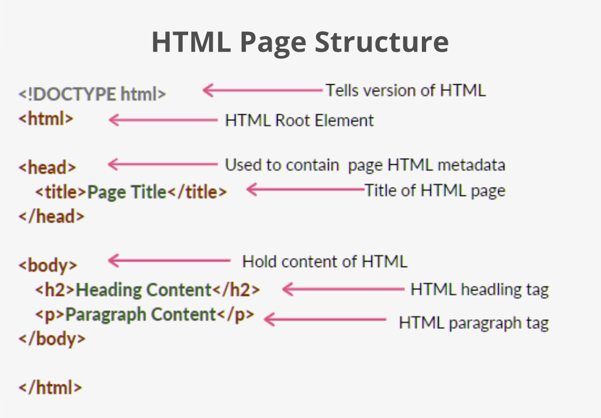

SVREC Technologies
SVREC TechnologiesFull-Stack development

What is Full-Stack development?
Let's suppose you are working with a team in a company, and all the members, including you, have been assigned some task related to an application.
The application front-end team performs some specific tasks related to UI design and UX or User Experience. In contrast, other team members deal with the backend logic and API part required for the application to run. A Full Stack Developer comes into the picture whenever the application needs to summarize the application's working. A Full Stack Developer deals with all the functionalities of an application, whether related to the Front-End part, Back-end part, API's, or any Middleware program required in the application. A Full-stack Developer debugs the program, responsible for handling the user queries and backend queries at the same time. They deal with the complete business logic by transforming it into an online application.
Full Stack Development became fancy in the mid of the '20s when the application needed to handle the extensive data set and better online digital transformation performance. In this era, we are not limited to only HTML, CSS, and XML. We have learned about other trending technologies, languages, and frameworks that transformed a WAP-enabled page into a Progressive Web Apps. These technologies helped to make a complete transformation in the look and feel of the application. However, Full Stack Developers are needed in the Online Digital IT market to support their business performance and make the business logic more efficient.

"A full-stack developer is a combination of front-end and backend development." Let us discuss each development in detail.
Front-End
Whenever we see a website, anyone like google, Facebook, Twitter, Amazon, etc., so what we see on the website is the front end.

"The front end refers to the interface we see on the website."
People got confused between graphic designers and front-end developers. Graphic designers are the one who designs a front part of a website using tools like Adobe Photoshop, Adobe Illustrator, etc. The main focus of UI developers is to stress the website looks. It is the responsibility of UI developers to design the website in an eye-catchy form. In contrast, the front-end developers stress the website's smooth functioning when it is on the client side.
It is mandatory to keep in mind whenever the user opens the website, either on a phone, tablet, or laptop, different browsers, the dimensions should be precise. Like UI developers use tools for their designing. Front end developers use the following languages:
HTML:
HTML is known as hypertext markup language and was developed by Tim Berners Lee. This forms the backbone of every front-end development. It has all the links, hyperlinks from which we can jump from one page to another or revert to the same page. The markups can change any text to image or any link. Every beginner developer who starts to learn web development begins with HTML. It provides the basic framework of the website. The latest version is HTML5.
Example of an html webpage:

CSS (Cascading Style Sheets):
Adding an effect to something makes it more mesmerizing. It is the work of CSS. It adds additional properties to the page, due to which the user gets more attracted. It is done by maintaining the style sheets for every orientation.
JavaScript:
JavaScript is the most famous language which is mainly used today. It is high level, multi-paradigm, and just in time compiled language. According to stack overflow, it is the most used programming language because its frameworks, such as react, angular, next, etc., are based on it. It can be used both in the front end and back end. Primarily JavaScript works in most browsers, but it can work in headless browsers, web view, or compilation input for a native environment.
Common Web browsers:
Internet Explorer, Firefox, Chrome, and Safari.
Back-End Development
The backend development refers to the server-side of any application. The user interacts with the website developed UI by the front-end developers. They have no interest in how the sign-in works, how we place an order, how the payment works, etc. A backend developer handles these kinds of issues, and the developer focuses on the databases, the APIS, the scripting languages, etc. A backend developer adds life to the tools created by a front-end developer.
Let us understand backend tools and techniques in brief:
Languages:
The languages that are used for the back end development can be any one of the following:
Java:
Java is an object-oriented language that is widely used in backend development. It has various frameworks like Spring, Struts, and hibernate used vigorously at the industrial level.
Ruby:
Ruby is an open-source, high level and dynamic language that focuses more on productivity. The main focus is convention over configuration, making it more populous in this era of backend developers.
.NET:
The dot net is very handy in companies. It has everything developers want, starting with the framework(C#, f#, etc.), base libraries, and editors for every operating system.
Python:
After being the most straightforward programming language, Python has topped in backend development due to its syntax and easy understandability. The python frameworks are - Django, Flask, Bottle, Tornado, Hug, etc., which are in demand these days.
PHP:
The evolution of backend development started with PHP only. PHP pages are the most secured. Every beginner in the backend starts with PHP to get a basic understanding of how PHP works.
Databases and Cache:
The popular databases which are being used are Oracle, MySQL, MongoDB, and NoSQL, out of which anyone can be learned and implemented. The caching mechanism like Varnish, Redis, Memcached is beneficial if known. Some of the popularly used databases are:
MySQL:
This is the most basic and powerful database as it forms all databases' bases. It stores data in the format of tables and rows. Using queries, we modify our databases.
Oracle:
is the most commercially suited database due to its advanced features in the new updates.
PostgreSQL:
It is an advanced open-source relational database. It follows the concepts of distributed SQL, horizontal scaling making it more attractive in the coming years.
MongoDB:
It is a NoSQL database. The data is set in the form of JSON, and information is also schema-less.
SUMMARY
Full Stack Development creates opportunities to learn more about how a business logic or idea can be converted to an application. Thus to Become a Full Stack Developer, one must have problem-solving skills and curiosity to learn new technologies. To become a Full Stack Developer, you must be aware of discussed technologies and concepts, and you can follow the general steps to start the journey to become a full-stack developer:
>Get to learn about how the internet works and how it displays the pages on the internet.
>Get to learn about software development strategies, SDLC, and methodologies that are most useful in corporate industries, such as Agile Methodology of Software Development, Waterfall Methodology of Software Development.
>Learn about making ER flow diagrams as this would help to understand the operation and management of applications or business ideas.
> Get to learn about how you can convert logic into a digital page through programming Languages.
> Get to Learn about essential ladders of Web Programming Languages- HTML, CSS. Now create simple projects to make your hands dirty on these general web languages.
> Learn about Scripting language- as scripting language helps to maintain and solve an application's critical queries or business logic. Data Structures help to simplify the necessary reasoning and splits the reason in a much simpler way. Start working with the projects. You can play with the pages' elements, such as attributes, objects, models, etc.
> Learn to work with Databases- as they help to generalize how we maintain a lot of data into the form of a digital database.
> Understand the functionality of the Servers and their connectivity in Client-Server Architecture.
> Learn about backend languages such as PHP, JavaScript, Rust, Ruby, Python, etc.
> Track the progress while creating and developing projects on these technologies. Initiate the Learning phase of a particular application and develop the application in the steps.
> Start Learning Framework as a framework has already built-in libraries that you have worked in backend languages. Some of the frameworks are based on JavaScript, i.e., React, AngularJS, NodeJS. Some other frameworks that are based on Python are Django, Flask, etc.
> Start working on projects that are already built on these technologies. Learn about Web APIs, Rest API, and other functionality, which guarantees a real-time connection between the 3rd party and the interface.
> Start working on Demo Projects and apply for the workspace to deal with real-world projects for growth and learning.